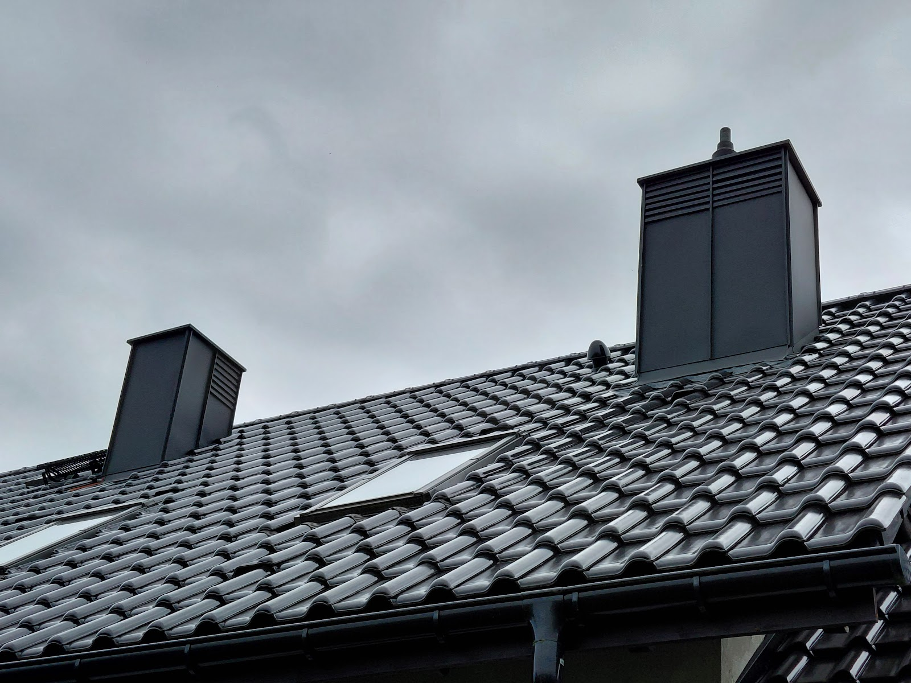

Od przełożenia kilku dachówek po nowy dach z więźbą. Ty pokazujesz problem - my mówimy, co ma sens i ile to kosztuje.
Zadzwoń teraz +48 577 297 075Prosty, przewidywalny proces. Bez niespodzianek i bez naciągania.
Telefon albo zdjęcie dachu. Po krótkiej rozmowie wiesz, czy przyjedziemy obejrzeć i w jakim terminie.
Wchodzimy na dach, mierzymy i robimy zdjęcia. Wycenę dostajesz na piśmie, rozbitą na pozycje - materiał osobno, robota osobno.
Materiał zamawiamy po zatwierdzeniu wyceny i pilnujemy dostawy. Z Twojego dachu schodzimy dopiero, jak jest skończony - nie w połowie na inną budowę.
Stare pokrycie jedzie na kontener, a Ty dostajesz gwarancję na robociznę - jak coś nie gra, wracamy i poprawiamy.
Zakres prac, jaki robimy najczęściej - pełny opis i wycenę znajdziesz niżej.
Każdy z tych dachów ma pod sobą czyjś dom. Pokrycia, więźby, obróbki - bez upiększania.


Firma dekarska wykonała swoją pracę bardzo profesjonalnie i terminowo. Ekipa była solidna, dokładna i dobrze zorganizowana, a jakość wykonania dachu stoi na wysokim poziomie.Dawid Czuprowski
Gorąco polecam, bardzo fachowo i rzetelnie wykonane obróbki blacharskie dachu. Usługa wykonana bardzo sprawnie, szybki czas realizacji. Obróbki wyglądają bardzo estetycznie.Izabela Świrydowicz
Polecam firmę Dachy z Pasją .Praca wykonana rzetelnie i w terminie cena za usługę zadowalająca .Doradztwo w doborze materiału . Osobiście polecamKatarzyna Cinal
Najwięcej dachów robimy w Wodzisławiu Śląskim i najbliższej okolicy: Rydułtowy, Pszów, Radlin, Rybnik i Jastrzębie-Zdrój. Sąsiednie miejscowości - kwestia jednego telefonu.
Najwięcej robi pokrycie i skomplikowanie bryły - dwa kominy i trzy lukarny to inna robota niż prosta dwuspadówka. Dlatego wyceniamy dopiero po wejściu na dach, za to na piśmie.
Nie. Pomiar i wycena w Wodzisławiu Śląskim i najbliższej okolicy są bezpłatne i do niczego nie zobowiązują.
Naprawy zamykamy zwykle w jeden dzień. Przy całym dachu tempo ustawia pogoda - otwieramy tylko tyle połaci, ile zdążymy zamknąć, więc dom nie czeka odkryty.
Zamawiamy kontener i stare pokrycie jedzie w całości, razem z foliami i resztkami łat, prosto z dachu. Wywóz mamy po swojej stronie, nie zostaje na Twojej głowie.
Tak, na firmę albo prywatnie. Kwoty na fakturze zgadzają się z wyceną - żadnych pozycji dopisanych na koniec.
Wracamy i sprawdzamy, gdzie puściło. Nasza robota - poprawiamy za darmo; przyczyna gdzie indziej - pokazujemy zdjęcia i mówimy, co z tym zrobić.
Zadzwoń lub napisz - przyjedziemy, obejrzymy i podamy jasną cenę. Bez zobowiązań.